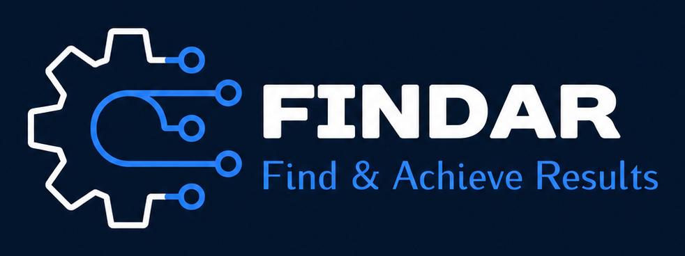
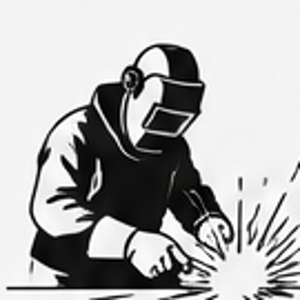
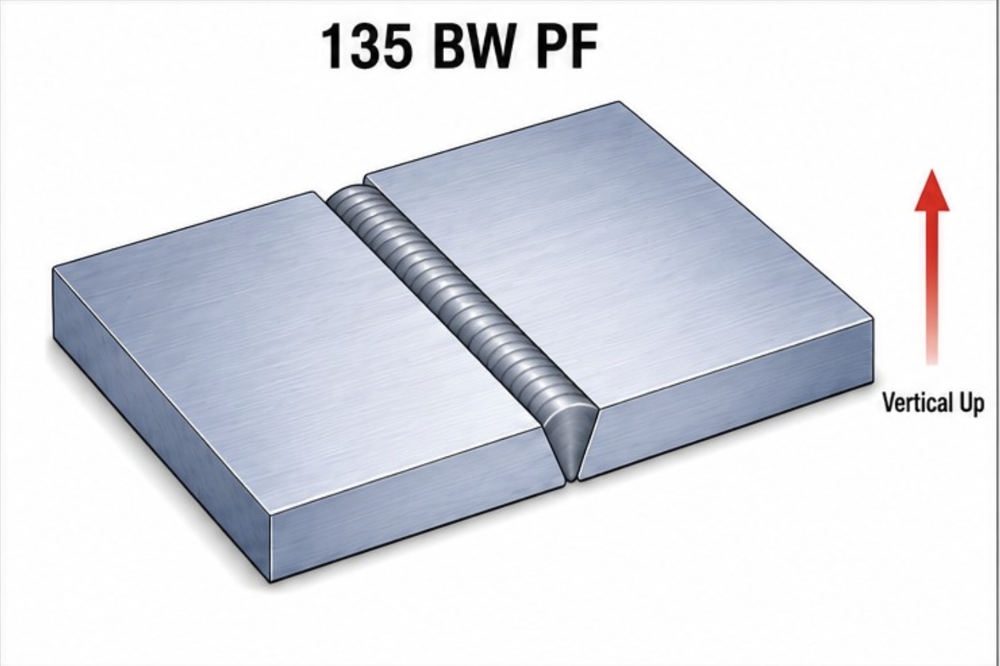
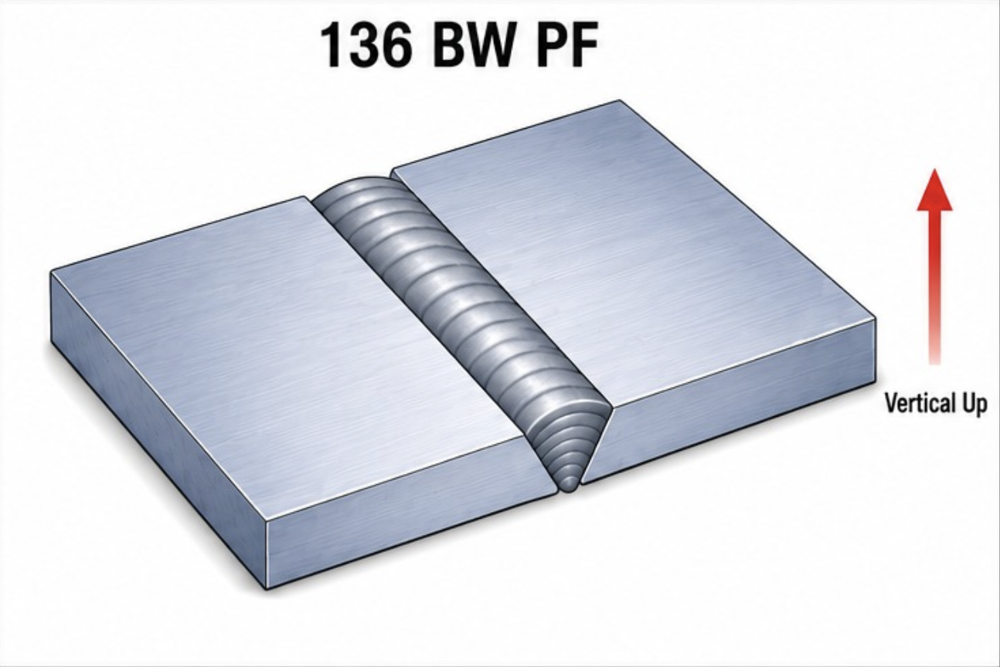
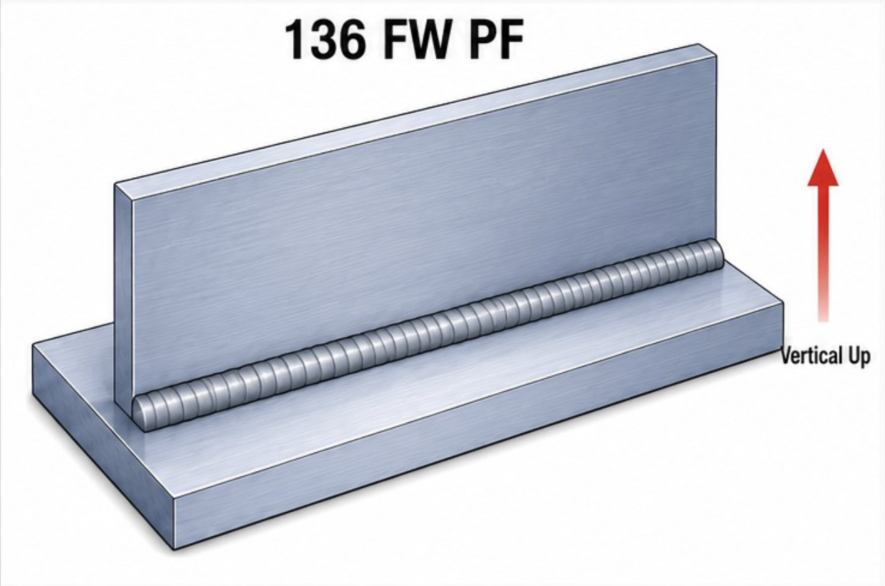

135
MAG — Solid Wire
- Проволока: G3Si1 Ø1.2 мм
- Газ: M21 Ar + CO₂
- Положения: BW PF, FW PF
- Соединения: ss nb, ml

Оценка профессиональных навыков с ориентацией на международные требования, современные производственные стандарты и дальнейшее развитие специалиста.

FINDAR — это практическая площадка в Казахстане для оценки, тестирования и развития квалификации сварщиков с ориентацией на международные требования и современные производственные стандарты.
Мы проводим практическое тестирование сварщиков в условиях, приближенных к реальному производству: участники выполняют сварочные задания, демонстрируют технику работы, соблюдение требований безопасности и качество выполнения сварных соединений.
Наша задача — объективно определить текущий уровень специалиста, выявить сильные стороны, показать зоны для улучшения и дать понятные рекомендации для дальнейшего профессионального развития.
FINDAR помогает сварщикам подготовиться к работе в проектах, где важны качество, дисциплина, стабильность выполнения шва и понимание технических требований.
FINDAR запускает международный пилотный проект по оценке и развитию квалификации сварщиков в Казахстане.
Мы приглашаем сварщиков принять участие в практическом мероприятии, где участники смогут проверить свой уровень, выполнить сварочные задания по производственным требованиям и получить профессиональную обратную связь от специалистов.
Проект направлен не только на оценку текущих навыков, но и на дальнейшее развитие сварщиков: понимание требований безопасности, качества сварных соединений, чтения технических заданий, работы по современным производственным стандартам и подготовки к международной практике.
Лучшие участники смогут быть рассмотрены для дальнейших этапов проекта, профессионального обмена опытом, дополнительной подготовки и участия в международных программах развития.
Тестирование FINDAR строится как практическая проверка навыков сварщика в условиях, приближенных к производственным. Формат ориентирован на требования международной практики, включая подходы EN ISO 9606-1.

BW PFНижнее положение стыкового соединения
BW PF bsСтыковое соединение с подкладкой и зазором
FW PF mlУгловое соединение, многослойная сваркаПроверка профессиональных навыков через реальные сварочные задания.
Выполнение заданий с учетом качества, дисциплины и безопасности.
Разбор результата, ошибок, техники и дальнейших зон развития.
Разбор процесса сварки: техника, положение горелки, стабильность движения.
Базовое понимание требований европейских и международных стандартов.
Обучающие мастер-классы и рекомендации по дальнейшему развитию.
Для более объективной оценки могут применяться визуальный контроль, ультразвуковой контроль и капиллярный / пенетрантный контроль.
Количество мест ограничено. Участие проводится по предварительной регистрации.
Чтобы подать заявку, необходимо пройти короткий предварительный отбор.
Нажмите на кнопку и отправьте сообщение в WhatsApp.
Укажите имя, город, опыт, методы сварки, материалы, толщины, чертежи и сертификаты.
Короткое анкетирование или мини-собеседование для определения уровня подготовки.
После скрининга участник получает информацию о формате, дате и группе.
Запишитесь через WhatsApp и укажите код участника со страницы.